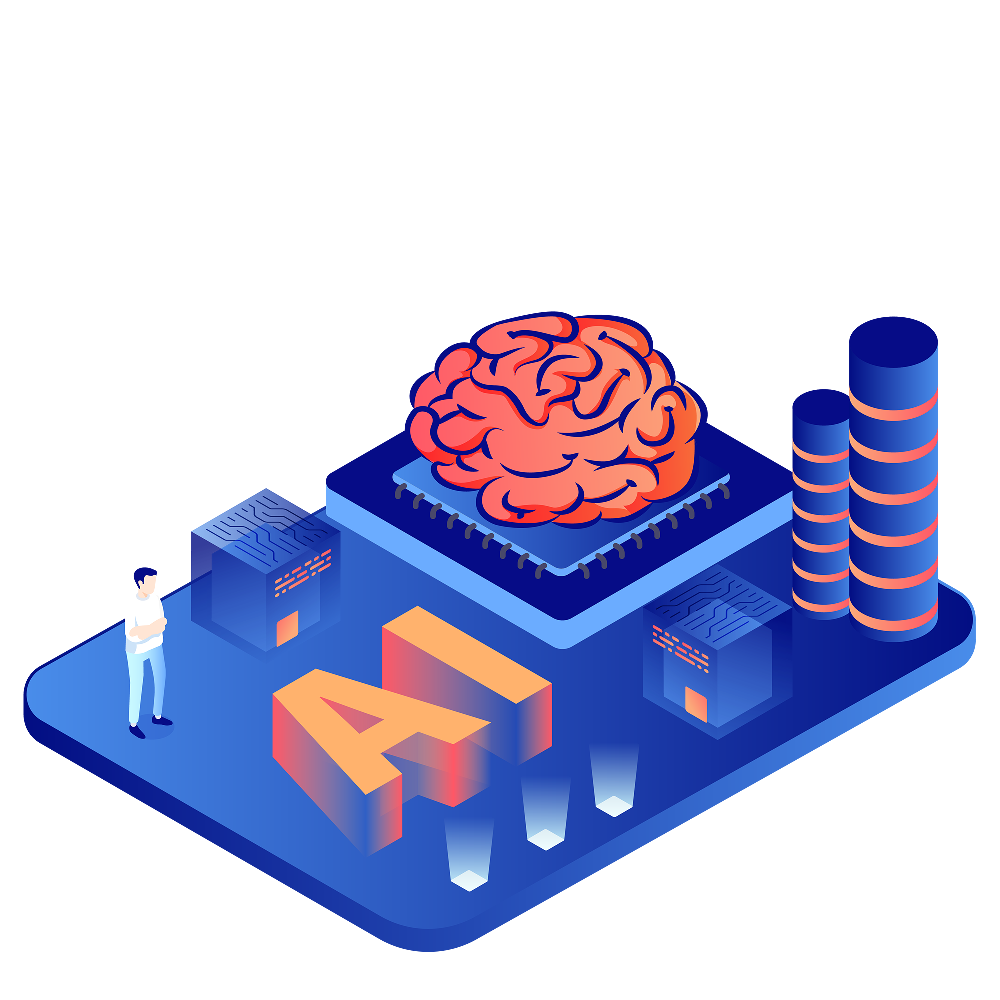

Transformando el mundo
Por favor, rote su pantalla
verticalmente o expándala.
Inteligencia artificial
Estoy desarrollando prototipos de inteligencia artificial aplicados en el campo de la medicina en el área de la salud mental

100%
PYTHON

Campo

De acuerdo con la organización mundial de la salud (OMS) se estima que el 3.8% de la población mundial sufre depresión, enfermedad que ha provocado entre el 80% y el 90% de los suicidios al año. En la actualidad existen tratamientos que ayudan a tratar y solucionar este problema, sin embargo, debido a su alto costo solo el 25% de las personas con depresión pueden adquirir esta ayuda. Falta de este apoyo también se debe a los estigmas sociales y personal capacitado, además la depresión está presente casi todo el tiempo, haciendo que sea imposible recibir la ayuda necesaria cuando se está sufriendo de ella.
La ayuda que necesitan tiene que ser una que puedan tener a su alcance en cualquier momento del día y que esté al alcance de su situación económica y los estigmas sociales no interfieran, siendo aquí donde entra la inteligencia artificial. A través de un robot (Bot) con el que puedan hablar y expresar como se sienten sin miedo a ser juzgados y que a su vez pueda entender por lo que están pasando y les brinden apoyo emocional, provocando que la soledad disminuya y por ende el estado de depresión disminuya y la reintegración social vaya progresando junto a la solución de otros síntomas causados por la propia depresión.